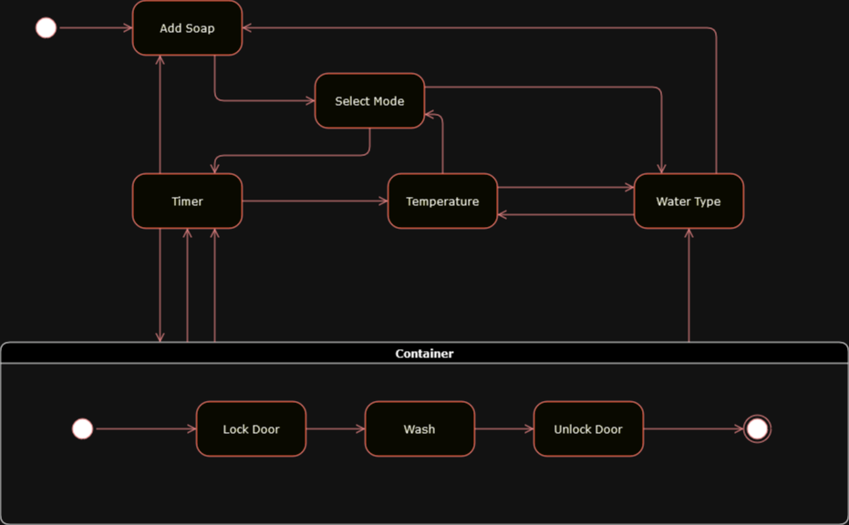

The Activity diagram defines what we want the software to do, this comes at the stage of identifying the business need.
The Use Case diagram is for the design of the software and its architecture.
Class diagram comes at the build stage.
State transition diagram at the testing phase.
Washing Machine State Diagram

Reflection
UML diagrams help to portray the architecture of the software to those who are not directly involved.